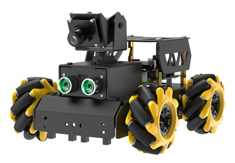
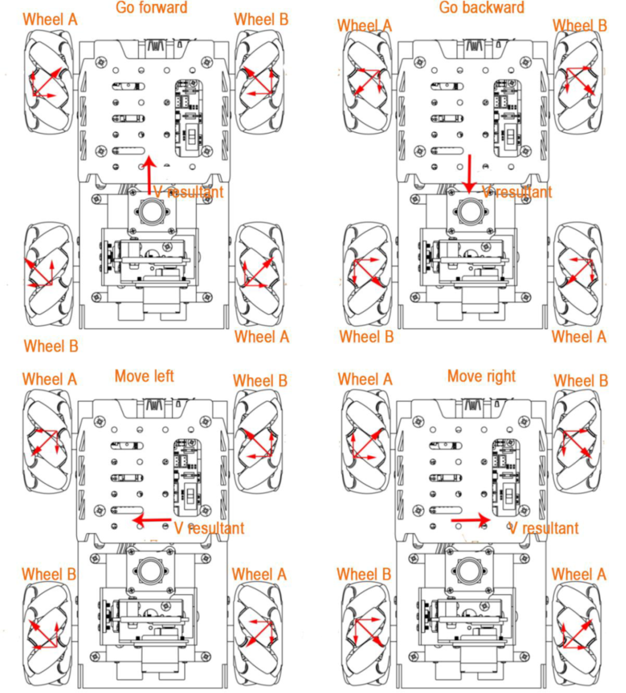
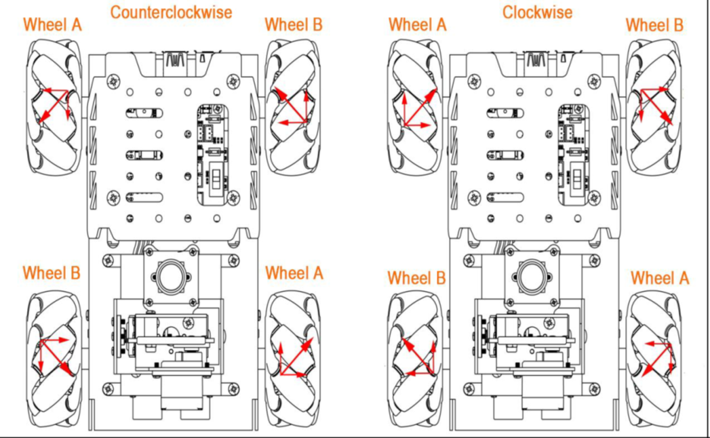

3.3. TurboPi Robot#

Image Credit: HiWonder.com
We will be using the TurboPi robot for our design challenge. The TurboPi uses a RaspberryPi to control it which has much higher processing capabilities than an Arduino. Watch the video below to witness what it can do.
3.3.1. Install Real VNC Viewer#
VNC is a graphical remote desktop control software. Through connecting your computer to the WiFi generated by Raspberry Pi, you can control the Raspberry Pi. Go to Company Portal on your Culver issued laptop and install Real VNC Viewer.
3.3.2. Connecting to the TurboPi Robot#
Turn on the TurboPi robot (both switches) and wait until it beeps.
TurboPi generates a WiFi starting with HW-. Connect your computer to this WiFi. The specific WiFi network is on the robot. Be sure not to connect to other TurboPi robots in the room.
Input the password hiwonder for the Wifi password.
After connecting, open Real VNC Viewer software that you downloaded from Company Portal.
Input the IP address 192.168.149.1 and then press Enter.
Input the Username and Password.
Username is pi
Password is raspberry then click OK.
3.3.3. Getting the TurboPi Robot to Move#
According to characteristic of the mecanum wheel, only when ALL wheels rotate forward does the car go forward. When ALL wheels rotate in reverse, the car goes backward. When A wheels rotate in reverse and B wheels rotate forward, the car strafes to the left. When B wheels rotate in reverse and A wheels rotate forward, the car strafes to the right. The analysis of force is as pictured.

Image Credit: HiWonder.com
Now you will work on programming the TurboPi Robot to move in various directions. You must demonstrate the following movements to your instructor in class with your robot. Use the TurboPi Move Forward, Backward, Left, and Right.pdf document (along with your instructor’s help ) to program the robot through the Real VNC Viewer software.
Movements to demonstrate to instructor
Move forward for 1 second with a speed of 50, then stop indefinitely
Move backward for 2 seconds with a speed of 25, then stop indefinitely
Strafe to the left for 1 second with a speed of 75, then stop indefinitely
Strafe to the right for 0.5 seconds with a speed of 100, then stop indefinitely
Move in a square (forward, right, backward, left) making the round trip ~5 seconds long, then stop indefinitely
3.3.4. Getting the TurboPi Robot to Turn#
According to the characteristics of the mecanum wheel, when only two left wheels rotate in reverse and two right wheels rotate forward, the car turns counterclockwise on the spot. When two left wheels rotate forward and two right wheels rotate in reverse, the car turns clockwise on the spot. The analysis of force is as pictured.

Image Credit: HiWonder.com
Now you will work on programming the TurboPi Robot to turn counterclockwise and clockwise. You must demonstrate the following movements to your instructor in class with your robot. Use the TurboPi_Rotating.pdf document to program the robot through the Real VNC Viewer software.
Movements to demonstrate to instructor
Rotate clockwise for 1 second with a speed of 50, then stop indefinitely
Rotate counterclockwise for 2 seconds with a speed of 25, then stop indefinitely
Move forward for 1 sec at speed 50, turn 180 degrees, and move forward (back to the starting point) at speed 100 and stop where you started
Make a continuous figure eight approximately 2 feet by four feet using only forward movements and rotations.